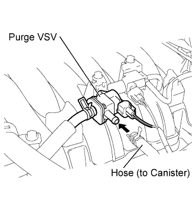
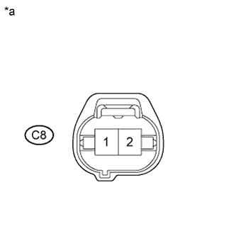

DTC P0443 Evaporative Emission Control System Purge Control Valve Circuit |
| DTC No. | DTC Detection Condition | Trouble Area |
| P0443 | Terminal voltage of the ECM output circuit does not correspond with the drive signals sent from the ECM to the purge VSV (1 trip detection logic). |
|
| Tester Display | Description |
| NORMAL |
|
| ABNORMAL |
|
| INCOMPLETE |
|
| UNKNOWN |
|
| 1.PERFORM ACTIVE TEST USING INTELLIGENT TESTER (ACTIVATE THE VSV FOR EVAP CONTROL) |
|  |
Connect the intelligent tester to the DLC3.
Disconnect the vacuum hose (charcoal canister side) from the purge VSV.
Start the engine.
Turn the tester on.
Enter the following menus: Powertrain / Engine and ECT / Active Test / Activate the VSV for EVAP Control.
When the purge VSV is operated using the intelligent tester, check whether the port of the purge VSV applies suction to your finger.
| Tester Operation | Specified Condition |
| VSV ON | Purge VSV port applies suction to finger |
| VSV OFF | Purge VSV port applies no suction to finger |
Reconnect the vacuum hose to the purge VSV.
|
| ||||
| OK | ||
| ||
| 2.INSPECT PURGE VSV |
Inspect the purge VSV (Click here).
|
| ||||
| OK | |
| 3.INSPECT PURGE VSV (POWER SOURCE) |
|  |
Disconnect the purge VSV connector.
Turn the engine switch on (IG).
Measure the voltage according to the value(s) in the table below.
| Tester Connection | Switch Condition | Specified Condition |
| C8-1 - Body ground | Engine switch on (IG) | 11 to 14 V |
| *a | Front view of wire harness connector (to Purge VSV) |
Reconnect the purge VSV connector.
|
| ||||
| OK | |
| 4.CHECK HARNESS AND CONNECTOR (PURGE VSV - ECM) |
Disconnect the purge VSV connector.
Disconnect the ECM connector.
Measure the resistance according to the value(s) in the table below.
| Tester Connection | Condition | Specified Condition |
| C8-2 - C30-18 (PRG) | Always | Below 1 Ω |
| C8-2 or C30-18 (PRG) - Body ground | Always | 10 kΩ or higher |
Reconnect the purge VSV connector.
Reconnect the ECM connector.
|
| ||||
| OK | |
| 5.PERFORM CONFIRMATION DRIVING PATTERN |
Connect the intelligent tester to the DLC3.
Turn the engine switch on (IG).
Turn the tester on.
Clear DTCs (even if no DTCs are stored, perform the clear DTC operation).
Turn the engine switch off and wait for at least 30 seconds.
Start the engine and warm it up until the engine coolant temperature is 75°C (167°F) or higher.
Idle the engine for 15 minutes or more.
Turn the tester on.
Enter the following menus: Powertrain / Engine and ECT / Utility / All Readiness.
Input the DTC: P0443.
Check the DTC judgment result.
| Result | Proceed to |
| NORMAL (DTC is not output) | A |
| ABNORMAL (DTC P0443 is output) | B |
|
| ||||
| A | ||
| ||